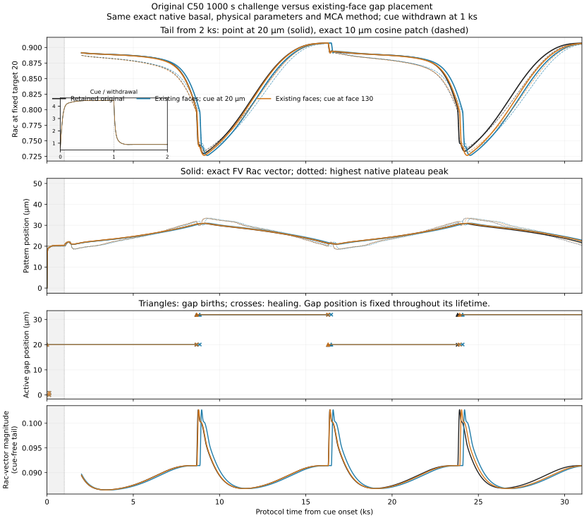
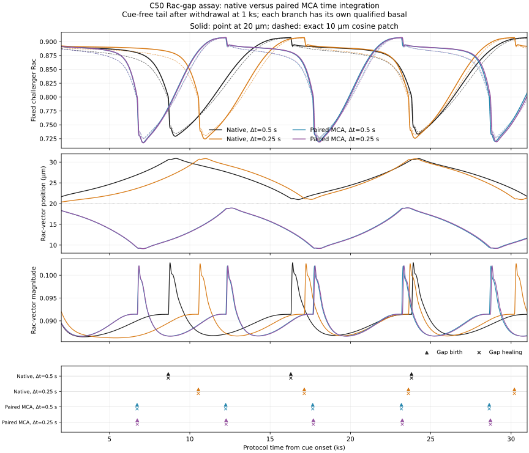
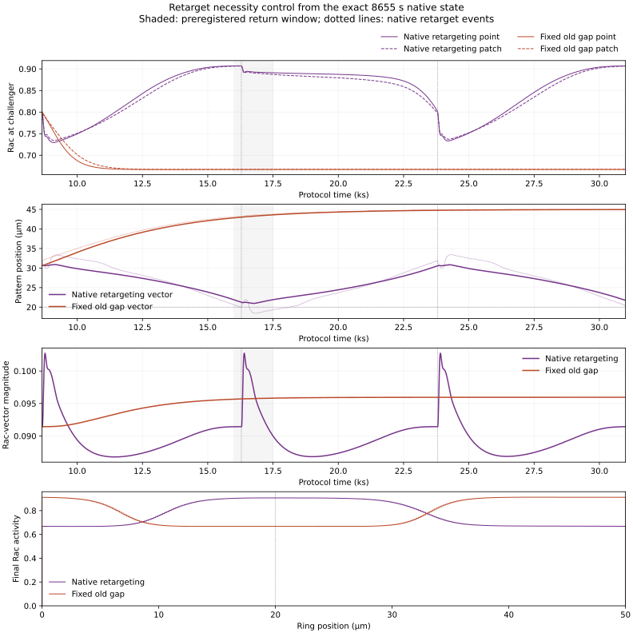

deBelly on a periodic domain:
useful diagnostics, unresolved mechanics
Executive conclusion: omit deBelly from the current ring assays and retain its corrected linear results. This attempt did not establish a faithful, numerically robust periodic model preserving the full Rac-driven protrusion mechanism. Several significant hurdles emerged and were never fully overcome.
Further work is scientifically plausible if membrane–cortex attachment is central to the question, but it requires a declared mechanical redesign. It is unlikely to be a quick boundary-condition repair. A published closed-cell model is a credible complementary direction, with a different biological circuit.
Inspect immediately around breakpoint movements
Open the seven-field event viewer
The viewer retains the original 1,000-second challenger and both existing-grid-face controls at circumference 50 µm. Each response covers 1,000 seconds of cue followed by 30,000 seconds of release. Branch A uses the original cue centre at 20 µm; branch B places it at the nearby grid face, 20.0617 µm. All three begin from the same saved basal preparation.
Select a breakpoint event, then use Before → Topology → +0.5 s to separate the immediate controller/connectivity change from the next physical update. All seven native fields are available: Rac, Rho, bound and unbound membrane–cortex attachment (MCA), membrane displacement, cortex velocity and tension. The gray reference holds the pre-event profile and old cut positions fixed.
Temporal coverage: native 0.5-second steps within approximately ±30 seconds of all 18 grouped event times, including separate pre- and post-topology states at the same time; 250-second context samples over the whole response. Neither time nor space is interpolated. Display values use ten significant digits; linked NPZ archives retain full precision. Dense windows do not cover the later direction reversal.
What was learned
| Question | Retained result | Interpretation |
|---|---|---|
| Can the native endpoints simply be joined? | The fully periodic tangential bulk removes the direct Rac-driven protrusion boundary mechanism. The native axisymmetric formulation itself omits a protruding spherical cap. | A new physical closure is required. Source findings |
| Does forcing gaps onto existing grid sites cure the motion? | Original point-return interval: 15,115 s. Existing-face branches A and B: 15,235 s each. A localized Rac domain persists and retargets the gap. | The tested alignment repair fails; discrete effects in general are not ruled out. Comparison |
| Were the apparently quiet cardinal preparations stable? | The 0°, 90°, 180° and 270° preparations pass finite gates but carry tiny growing offsets. In the saved near-symmetric preparation, the shared asymmetric mode has an e-folding time of about 2,840 s. | A finite quiet preparation does not establish asymptotic stability. Angles · Onset |
| Does retargeting matter to the return? | A fork at 8,655 s retains the old gap and suppresses later retargeting. In 16,000–17,500 s, target Rac peaks at 0.667 versus 0.907 in the native branch; polarization and motion persist. | The complete retarget operation matters to that return. Healing, new opening, controller changes and recycling were not isolated individually. |
| Is the oscillation clock robust? | Native timestep halving changes the measured return by about 13%; mesh doubling changes it by about 2–3%. Conservative paired MCA exchange retains recurrence but changes the route and clock. | No converged period or unique physical clock was established. |



How far did the mechanism analysis get?
At all retained event maps, the seven piecewise-constant field profiles are unchanged immediately by topology processing, including conservative splits. Cuts and controller state change first; the next mechanical solve responds. Rac initially continues in its previous direction throughout the first 30 seconds after each late retarget. A breakpoint jump is therefore distinct from a jump of the chemical domain.
The growing near-symmetric mode was characterized in all seven fields and the four flank-controller variables. Its discrete linear diagnostic agrees with the observed growth timescale, but this does not establish a continuum instability.
During finite travel, the Rac region changes shape. In the first branch-A outgoing passage from about 2 to 10 µm away from the gap, its active width grows from 16.26 to 21.43 µm. The old gap’s maximum protrusion command falls from about 0.0250 to 4.28 × 10−8 µm/s, while its mechanical cut remains. Rac is not directly advected in the retained model; unequal reaction and diffusion produce domain movement, with mechanics acting through MCA and Rho.
The instantaneous Rac phase rate is accounted for by MCA-dependent and basal production (both Rho-inhibited), decay and diffusion. These coupled source allocations describe the evolving state; they do not identify a unique causal clock. A complete explanation of onset, reversal and timing remains unfinished.
Onset growth figure · Evolving travel profiles · Selected travel measurements


Why the periodic extension remains incomplete
Missing cap mechanics. The native model prescribes cortical flank velocity and a separate membrane displacement/relaxation rule at a protruding end. The published spherical extension also truncates the protruding cap and neglects radial deformation. It does not supply an uncut, normally deforming ring. This structural issue follows from the original paper and supplementary model, especially supplementary §7.1.
Unresolved material and reference assumptions. Rac-triggered cuts preserve the native protrusive arms, but leave an omitted-cap/interface interpretation with prescribed actuation, global MCA replacement and controller displacement references. Continuous cap material, stored strain during healing, physical exchange with a reservoir and actuator work were not brought together into an accepted complete model. No blanket restriction on net membrane rotation was adopted. Uniform material spacing would not prevent membrane material from circulating; tangential material motion and normal shape deformation are separate questions.
Numerics and causal interpretation. Native sequential MCA exchange creates a numerical total-pool residual. Conservative paired exchange removes that residual but does not establish convergence of the full dynamics. The native return intervals are 15,115/13,080 s at 324 cells and 14,690/12,765 s at 648 cells for steps 0.5/0.25 s. Paired-exchange intervals are about 10,935–11,020 s. These finite observations do not establish a limit cycle or isolate one numerical term as its cause. Audited implementation and restart checks are valuable, but cannot validate an undeclared physical closure.
Recommended next steps
- For the current comparison, omit periodic deBelly. Keep the corrected independent-endpoint linear model and clearly state the ring exclusion. No accepted deBelly size-response or noisy-ring persistence counterpart resulted from this attempt.
- If MCA biology is essential, undertake one bounded redesign. Choose either a declared driven omitted-cap analogue or a finite active cap that resolves normal deformation. Preserve Rac-driven protrusion, define material return, healing strain and the physical drag/torque reference, and verify conservation/work accounting. Then check rotation covariance, perturbations and mesh/time sensitivity before comparative assays. Persistent traveling or oscillatory states can be valid outcomes; stationarity after every cue is not a required success criterion.
- If complete closed geometry is the priority, evaluate a complementary published model. First reproduce one published closed-cell example and its numerical controls. Only then decide whether adding Rac–Rho/MCA feedback earns its complexity.
| Candidate | Useful ingredient | Biological or numerical limitation |
|---|---|---|
| Ivšić et al., 2026 CellRDA-LS source | Deforming closed planar cell, activation chemistry, protrusive forcing and cortical/cytosolic flows. Best implementation starting point among the inspected alternatives. | A different signaling circuit, without separate Rac–Rho and MCA biology. Source inspected; not run or independently validated here. |
| Mietke et al., 2019 | Normal and tangential active-surface mechanics coupled to changing geometry and regulator transport. | Generic stress regulator. An axisymmetric meridian requires pole conditions; it is not an unchanged planar periodic loop. |
| Werner et al., 2022 | Separate membrane/cortex interfaces and force-sensitive linker dynamics; useful for a physical MCA/cap redesign. | No Rac–Rho circuit. Reported simulations freeze the cortex and omit linker transport, limiting immediate reuse. |
These are recommendations inferred from inspected primary models, not tested replacements. The bounded literature record includes further alternatives and code-availability limits.
The project’s biological motivation is WGD-associated enlargement and migration persistence. These assays measure activity organization, response and polarity motion. Rac-vector motion is not a cell velocity law, and neither it nor 1D reversal time directly measures observed migration persistence or an OU persistence estimate.
What is retained, and what was retired
This folder is the single retained package for the 19 October deBelly periodic-domain attempt: the event viewer with full-precision local inputs, four compact evidence groups, an executive assessment and minimal historical model sources/basal restart. Methods and reproduction limits distinguish regenerating the viewer from rerunning the retired scientific campaigns.
The remaining dated run trees, duplicated reports, unsuccessful cap/operator prototypes, standalone development scripts, status notes and task temporary files were selected for removal under the user’s cleanup instruction. Full native campaign histories outside the retained event windows, context samples and selected summaries are not retained. Archived validation JSON records checks performed before retirement; its historical source paths are provenance identifiers, not promises that the full old inputs remain available.
Measured 2026-10-19 20:12:00 UTC: 125.4 MiB retained. 6.692 GiB of superseded workspace artifacts and 139.5 MiB of task temporary files were retired. Net workspace allocated-storage reduction after retaining this package: 6.570 GiB. These are measured filesystem allocations, not a filesystem free-space estimate.
Structured assessment · Evidence hashes · Removal inventory · Cleanup receipt · Independent package/cleanup audit
Established corrected linear evidence, earlier independent diagnostics, supported ring work and the separate Spring validation are outside this cleanup. Root DATA_MANIFEST.md records the measured storage change.